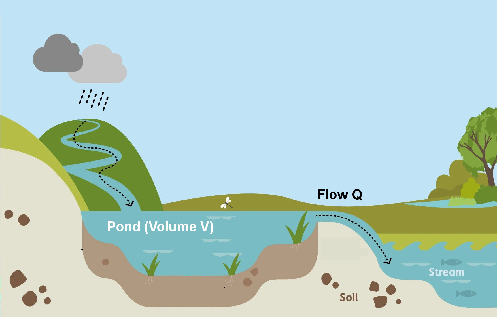
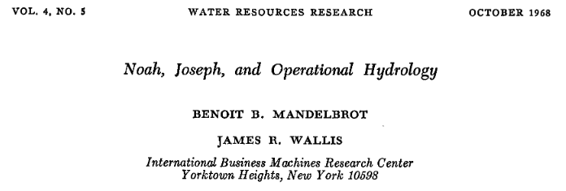
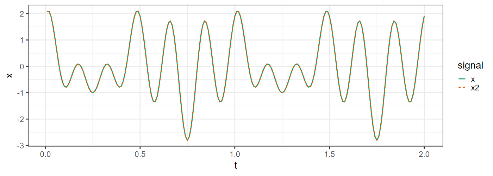
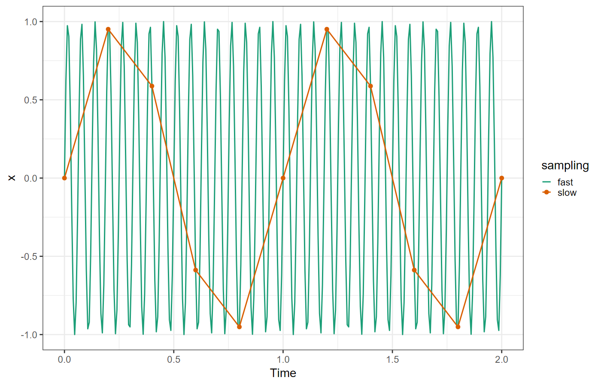

Initial concentration \(M / V\)
1 day later
\[ \frac{M}{V}\: \left( \frac{V - Q}{V} \right) = \frac{M}{V}\: \left( 1 - \frac{Q}{V} \right) \]
2 days later:
\[ \frac{M}{V} \left( 1 - \frac{Q}{V} \right)^2 \]
3 days later:
\[ \frac{M}{V} \left( 1 - \frac{Q}{V} \right)^3 \]

Time-series: \(x_j\), \(j = 1, \ldots, N\),
Periodic representation (Fourier Theorem):
\[ \begin{align} x_j =& \frac{a_0}{2} + \sum_{k = 1}^N a_k \cos(k \omega t_j) + b_k \sin(k \omega t_j) \\ \omega =& \frac{2\pi}{N \tau} \\ a_k =& \frac{2}{N} \sum_{j = 1}^N x_j \cos(k \omega t_j) \\ b_k =& \frac{2}{N} \sum_{j = 1}^N x_j \sin(k \omega t_j) \\ \end{align} \]
Complex number \(z = u + i v,\) where \(i = \sqrt{-1}\)
\[ e^{i x} = \cos(x) + i \sin(x) \]
Fourier Theorem with complex numbers:
\[ \begin{align} x_j =& \sum_{k = -N}^N c_k e^{i k \omega t_j} \\ \omega =& \frac{2 \pi}{N \tau} \\ c_k =& \left\{ \frac{1}{2} (a_k - i b_k) \quad k \ge 0 \atop \frac{1}{2} (a_k + i b_k) \quad k < 0 \right. \end{align} \]
Continuous function \(f(t)\), \(t\) varies continuously from \(-\infty\) to \(+\infty\):
Fourier transform \(g(\omega)\):
\[ \begin{align} f(t) =& \frac{1}{2\pi} \int_{-\infty}^{+\infty} g(\omega) e^{+i \omega t} \mathrm{d}\omega \\ g(\omega) =& \int_{-\infty}^{+\infty} f(t) e^{-i \omega t} \mathrm{d}t \end{align} \]
Discrete observations: \(x_j\) sampled at \(N\) evenly-spaced intervals \(t_i = i \tau\)
Discrete Fourier transform \(z_k\):
\[ \begin{align} x_j =& \frac{1}{N} \sum_{k = 0}^{N - 1} z_k e^{+i k \omega t_j} \\ z_k =& \sum_{j = 1}^N x_j e^{-i k \omega t_j} \\ \omega =& \frac{2\pi}{N \tau} \end{align} \]
Parseval’s Theorem:
Energy in a signal \(f(t)\)
\[ \begin{align} E &= \int_{-\infty}^{+\infty} \left| f(t) \right|^2 \mathrm{d}t \\ &= \frac{1}{2\pi} \int_{-\infty}^{\infty} \left| g(\omega) \right|^2 \mathrm{d} \omega \end{align} \]
Power spectral density
\[ S(\omega) = \left| g(\omega) \right|^2 \]
Discrete Parsival’s Theorem:
Energy in a signal \(x_j\)
\[ \begin{align} E &= \sum_{j = 1}^N | x_j |^2 \\ &= \frac{1}{N} \sum_{k = 0}^{N - 1} \left| z_k \right|^2 \end{align} \]
Power spectral density
\[ \begin{align} S(k \omega) &= \left| z_k \right|^2 \\ \omega &= \frac{2\pi}{N \tau} \end{align} \]
fft(): Fast Fourier Transform
df <- tibble(
i = seq(200),
t = 2 * i / length(i),
x = 0.7 * cos(2 * pi * t * 2) +
1.2 * cos(2 * pi * t * 6) +
0.9 * sin(2 * pi * t * 5)
)
df_ft <- tibble(z = fft(df$x),
i = seq_along(z),
f = i - 1) |>
mutate(ps = Mod(z * Conj(z)) / n(),
f = ifelse(f > n()/2, f - n(), f) / max(df$t)) |>
relocate(i, f, z, ps)
head(df_ft)## # A tibble: 6 × 4
## i f z ps
## <int> <dbl> <cpl> <dbl>
## 1 1 0 -6.128431e-14+0.000000e+00i 1.88e-29
## 2 2 0.5 2.409184e-14+1.942890e-15i 2.92e-30
## 3 3 1 -6.883383e-15+3.974598e-14i 8.14e-30
## 4 4 1.5 -2.495226e-14-6.661338e-15i 3.33e-30
## 5 5 2 6.944803e+01+8.773326e+00i 2.45e+ 1
## 6 6 2.5 3.367053e-14-1.406289e-15i 5.68e-30Note: We can interpret the higher frequencies (\(k > N/2\)) as negative frequencies (\(k \rightarrow k - N\))
\[\begin{align} z_k =& \sum_{j = 1}^N x_j e^{-i k \omega t_j} \\ \omega =& \frac{2\pi}{N \tau} \\ k \omega t_j =& k \frac{2\pi}{N\tau} j \tau = 2\pi jk / N \\ e^{i (k + N) \omega t_j} =& e^{i 2\pi j (k + N) / N } = e^{i 2\pi j (k/N + 1)} \\ e^{i 2\pi (v + 1)} =& e^{i 2\pi v}, \\ \text{so} & \\ z_{k \pm N} =& z_{k} \end{align}\]
df2 <- df |> mutate(x2 = Re(fft(df_ft$z, inverse = TRUE)) / n())
df2 |> summarize(rmse = sqrt(mean((x - x2)^2)))## # A tibble: 1 × 1
## rmse
## <dbl>
## 1 4.12e-16df2 |> pivot_longer(c(x, x2), names_to = "signal", values_to = "x") |>
ggplot(aes(x = t, y = x, color = signal, linetype = signal)) +
scale_color_brewer(palette = "Dark2") +
geom_line(linewidth = 1)
tau = 0.2
omega = 2 * pi * 3.2 / tau
fast <- tibble(time = seq(0, 10 * tau, tau / 30),
x = sin(time * omega),
sampling = "fast")
slow <- tibble(time = seq(0, 10 * tau, tau),
x = sin(time * omega),
sampling = "slow")
df <- bind_rows(fast, slow)
ggplot(df, aes(x = time, y = x, color = sampling)) +
geom_line(linewidth = 1) +
geom_point(data = slow, size = 3) +
scale_color_brewer(palette = "Dark2") +
labs(x = "Time", y = "x")